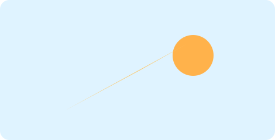

1. Метеоритний дощ
Уникайте перешкоди, що падає згори.
⌨️ Відкрити заготовку коду
import pgzrun
WIDTH = 600
HEIGHT = 400
import random
player_x = 300
obstacle_x = 100
obstacle_y = 0
game_over = False
def update():
global player_x, obstacle_y, game_over
if game_over: return
if keyboard.left: player_x -= 4
if keyboard.right: player_x += 4
player_x = max(25, min(WIDTH - 25, player_x))
obstacle_y += 2
if obstacle_y > HEIGHT: obstacle_y = 0
# TODO: перевірте зіткнення гравця з перешкодою
def draw():
screen.fill("lightblue")
screen.draw.filled_circle((player_x, 355), 24, "blue")
screen.draw.filled_circle((obstacle_x, obstacle_y), 22, "red")
if game_over: screen.draw.text("Гру завершено", (150, 180), color="red", fontsize=40)
pgzrun.go()Що дописати
- Додайте перевірку зіткнення і рестарт.
- Змініть щонайменше два параметри та перевірте результат запуском.